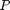
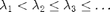

The nonlinear optical response of a simple molecule
Jared L. Aurentz and John S. Minor, September 2014
Contents
(Chebfun example) [Tags: ]
function OpticalResponse
Introduction
The optical response of a material is the measure of how the molecular polarization  changes with respect to an applied electric field strength . In most cases is analytic in and can be written as a Taylor series.
Here is the static polarization of the molecule which does not affect the optical response (the optical response only depends on the derivatives of ). The nonlinear optical response is characterized by the coefficients corresponding to powers of greater than . If the potential  of a given molecule is known the polarization can be computed by constructing the Hamiltonian and solving the Schroedinger eigenvalue problem.
of a given molecule is known the polarization can be computed by constructing the Hamiltonian and solving the Schroedinger eigenvalue problem.
If the are countably many and can be ordered as  then the polarization is computed by the formula,
where is the first eigenfunction, also known as the ground state of the system. To add the contributions of the applied electric field strength a linear term is added to the Hamiltonian.
Solutions to Schroedinger's equation now depend on the parameter .
If is not too large then the polarization can still be computed as before.
From the Taylor series we see that the nonlinear optical response is characterized by higher order derivatives of at , [1].
The quantum harmonic oscillator
One example of a simple molecule is a single electron bound by a quadratic potential . The solutions of this system are the Hermite functions. These can be computed easily using Chebfun.
L = 8; H = @(E) chebop(@(x,u) -.5*diff(u,2) + 2*x.^2.*u + E*x.*u,[-L,L],'dirichlet'); [PSI,LAMBDA] = eigs(H(0),4,'sr'); LW = 'linewidth'; FS = 'fontsize'; plot(PSI,LW,2); title('Hermite Functions',FS,16);
For an alternative method for computing eigenfunctions of the Schroedinger equation checkout the command `quantumstates`.
To compute the polarization function is evaluated at a set of Chebyshev points and then interpolated with a polynomial
Emax = .1; x = chebfun('x',[-L,L]); function pval = polarization(efield) [psi,lambda]=eigs(H(efield),1,'sr'); pval = ((x.*psi)'*psi)/(psi'*psi); end P = chebfun(@polarization,[-Emax,Emax],'vectorize','eps',1e-10); plot(P,LW,2); title('Polarization v. Electric Field',FS,16); xlabel('Electric Field',FS,16); ylabel('Polarization',FS,16);
Taking derivatives of at gives the various optical response coefficients.
dP = diff(P); alpha = dP(0) d2P = diff(P,2); beta = d2P(0)/2 d3P = diff(P,3); gamma = d3P(0)/6
alpha = -0.2500 beta = -6.5919e-08 gamma = -1.0643e-05
References
[1] Juefei Zhou, Urszula B. Szafruga, David S. Watkins, and Mark G. Kuzyk, Optimizing potential energy functions for maximal intrinsic hyperpolarizability, Physical Reviews A, 76 (2007), 053831 pp. 1-10.
end